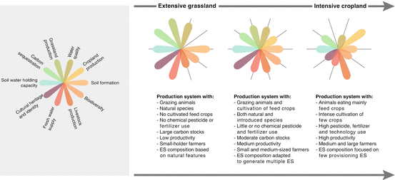
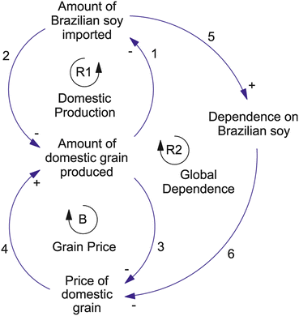
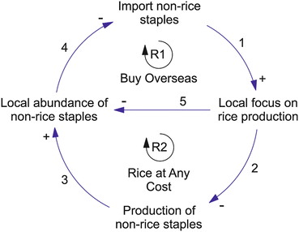
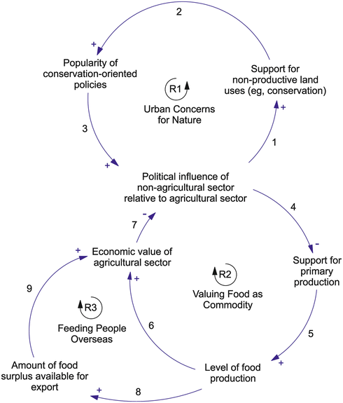

26.1 Introduction
Humankind is now a predominantly urban species (see Chap. 1), a situation that is unique in the history of our species. We may, for the most part, no longer be agrarian societies in terms of our socio-cultural arrangements, but we remain as utterly dependent on agriculture as earlier humans were. Human ingenuity has made it possible for one to be able to dine in a restaurant that is on the 122nd floor of a skyscraper, some 422 m off the ground, in the middle of the Arabian Desert. However, the potato that one eats would not exist if the ecosystem services of the planet’s surface had not been harnessed by an agricultural worker to grow it. Furthermore, agriculture would not continue to thrive if were not for an enormous amount of energy inputs organized by humanity and an even more important range of ecosystem services giving essential support that is often unseen and nearly always under-valued.
The growing trend towards urbanization is exacerbating the need to expand food production to support a growing human population. By 2050 the population is projected to grow by about another two billion people, or by about 20 %. However, food production will need to grow by more than double that, by an estimated 50 %. One primary reason for this disparity is directly related to urbanization. As people move from rural, agrarian lifestyles to urban areas, their incomes and consumption tend to rise. An essential characteristic of that trend is a shift in diet towards more protein, which in turn leads to an increasing demand, beyond the simple population growth rate, for meat and fish (Delgado et al. 2003). The increasing demand for meat, in particular, drives an increase in grain production for livestock feed and, in general, an increased use of resources associated with agricultural production.
The stocks of food available in a city do not determine adequate flows of food to consumers. Spoilage and wastage are both outflows of food that are not consumed at all. The figures vary and are difficult to estimate, but globally around 30 % of food produced is wasted. Adequate food supplies may be nominally available within the city, but not equally distributed. Available food is also not necessarily affordable, and certainly not equally so. Particular kinds of food may be culturally unacceptable or at least fail to meet preferences. Food choices are also susceptible to marketing, promotion and the influence of the buying power and retail strategies of the big food companies. Together these kinds of processes act to constrain what food gets consumed, in what volumes, by whom, and with what health outcomes. However, Earth’s ecosystem services have to produce the food whether it is wasted or not, and in that sense production does come before distribution and consequent access and availability; thus, our chapter focuses mostly on production.
At the same time that urban dwellers are exerting an increasing pressure on natural resources both within urban boundaries and particularly from distant support areas (Deutsch and Folke 2005; Deutsch et al. 2007; Folke et al. 1997), urbanites have become increasingly decoupled from nature and have lost connections to very resource base that they are dependent upon for food production (Folke 1998). An example of this is the growing preference of urban dwellers in the world’s wealthy countries for conservation of small plots of “pristine” ecosystems over stewardship of the agroecosystems that they are dependent on for their very existence (see case studies in Sect. 26.5 of this chapter).
Ultimately, biodiversity pays the price for the increasing demands on natural resources, and for the increasing disconnect between urban dwellers and the ecosystem services on which they depend. Biodiversity, in terms of the abundance of species, is already being lost at a rate 100–1,000 times the background rate of extinction (Millennium Ecosystem Assessment 2005). It is now estimated that the Earth’s biodiversity may be approaching a critical threshold that will lead to a mass extinction event at the planetary level (Barnovsky et al. 2011). Halting the loss of biodiversity is critically important, as biodiversity provides the underpinning for well-functioning ecosystems and thus is necessary for the provision of ecosystem services, thereby supporting human well-being (Millennium Ecosystem Assessment 2005; Díaz et al. 2006; Cardinale et al. 2012).
In this chapter we take a complex systems approach to exploring the linkages among the phenomenon of urbanization, the changing value systems and world perspectives of urban dwellers, the sometimes distant connections to the food production systems that support cities, and the often invisible ecosystem services that support food production and in turn are affected by food production. We focus on the wealthy urban populations of three developed nations to explore the conventional “productivist” food production paradigm upon which they are based. We conclude the chapter by putting forward a number of scenarios describing plausible trajectories for the evolution of food systems in the twenty-first century as humanity becomes increasingly urbanized.
26.2 Impacts of Agriculture on Biodiversity
Human impacts on biodiversity (both in terms of increased rates of extinctions and reductions in abundance and distribution), which result from a quest for food, predate even the advent of agriculture. There is good evidence of human predation as an important factor in the so-called Pleistocene megafauna extinctions during the last ice age, from 30,000 to 60,000 years (Alroy 2001; Martin and Klein 1984; Roberts et al. 2001). These were widespread across the planet, ranging from the disappearance of the woolly mammoths in northern Eurasia to the giant wombats in Australia. However, by far the biggest impact of human activity on biodiversity has come in the last 10,000 years, largely through the indirect effects of agriculture and its expansion across the planet, particularly after the industrial revolution. The most important of these impacts are:
- Habitat loss and fragmentation The biggest negative impact on biodiversity is coupled to habitat loss primarily due to the conversion of naturally biodiverse forests, wetlands and grasslands to less diverse agroecosystems of croplands and pastures (Pereira et al. 2010). Humans have already altered more than half of the Earth’s surface (Ellis et al. 2010) and croplands and pastures occupy about 40 % of all lands (Foley et al. 2005), compared to 14 % in 1850. In the 30 years following the beginning of the Great Acceleration in 1950, more areas were cultivated than in the 150 years between 1700 and 1850 (Cassman and Wood 2005). With about 33 % of all croplands used for feed crops (Steinfeld et al. 2006), the livestock sector in total occupies more than 30 % of global land area. Today, cultivated systems need to supply cities with food, feed, fiber and fuels. However, not all increases in food production have been met by expansion of areas. 70 % of the growth in crop production in developing countries since the 1960s is due to intensification of agricultural management practices (Bruinsma 2003). These greater yields were achieved by use of irrigation, mechanization, inorganic fertilizers and new crop varieties (i.e., the Green Revolution).
- Modification of the water cycle Agriculture modifies the water cycle in two ways – directly through the diversion of liquid water (“blue water”) from rivers and underground aquifers, and indirectly via the conversion of forests to croplands and pastures and thus a change in evapotranspiration from the landscape (“green water flows”) (Gordon et al. 2005). The diversion of blue water flows can have direct impacts on the biodiversity of freshwater ecosystems; the shrinkage of the Aral Sea due to river diversion serves as an extreme example. However, the conversion of forests – particularly very biodiversity-rich tropical forests – to agricultural systems arguably has a greater impact on biodiversity.
- Application of nutrients The application of nutrients, mainly nitrogen (N) and phosphorous (P), on agricultural landscapes and consequent transport into natural ecosystems (e.g., wetland habitats and inland and coastal waters) has also had major negative impacts on biodiversity in these systems. For example, excess P can lead to the eutrophication of freshwater lakes and rivers (e.g., Schindler 2006) while transport of P and N can lead to anoxic zones in the coastal seas adjacent the mouths of large rivers whose catchments contain extensive croplands, such as the Gulf of Mexico adjacent to the mouth of the Mississippi River (Potter et al. 2010). Excess N applied to landscapes can also affect terrestrial biodiversity by favoring fast-growing generalists that then outcompete rarer species that thrive in nutrient-poor niches in the landscape (Mooney et al. 1999)
- Modification of disturbance regimes Two prominent examples of this driver are: (i) changes in quantity, timing and frequency of natural flooding events on major rivers due to large-scale irrigation projects, which have consequences for the biodiversity of freshwater ecosystems (changes to the flooding regimes of the Indus, Nile, and Rio Grande rivers are all instances of vastly-modified flooding regimes mainly driven by agriculture); (ii) changes in fire regimes due to land use change such as forest conversion to agriculture (for example, naturally occurring forest fires associated with El Niño play a role in seed dispersal in Borneo’s forests, but land-cover modifications related to oil palm plantations have produced changes in the intensity and extent of fire and it is now a destroyer of seeds) (Curran et al. 2004). Pervasive changes in fire regimes in dryland ecosystems – for example, the intensity, frequency and seasonality of savannah and woodland fires across much of Australia – can also lead to large impacts on biodiversity (Steffen et al. 2009).
Although the focus of this chapter is on the impacts of food production systems on biodiversity, the need to provide food for the growing urban population has other impacts on the environment, across all scales, from the local to the global level. Now that we are in the Anthropocene epoch, where human activities rival or exceed natural biogeophysical processes, we need to explicitly deal with global-level environmental challenges to resource use (Steffen et al. 2011). The planetary boundaries concept quantifies biophysical thresholds that cannot be transgressed if we wish to avoid undesirable environmental change (Rockström et al. 2009). As shown in Table 26.1, food production systems have a close and complex relationship to the planetary boundaries, including of course the boundary for biodiversity loss. They contribute to human pressure on all of the planetary boundaries, but equally are at risk themselves if many of the boundaries are transgressed.
Table 26.1
Food production and planetary boundaries
Planetary boundary | Relation to food provision | |
|---|---|---|
1. | Land-use change | Conversion of natural ecosystems to croplands and pastures is the most dominant form of land-use change in terms of the area converted. The area of “domesticated land” (crops and pastures) has increased from a low level prior to the industrial revolution to about 40 % of the ice-free land surface now |
2. | Phosphorous & nitrogen cycle | By far the largest perturbation of these two element cycles has been their mining (P) and their fixation from the atmosphere (N) for the production of fertilizers. In some regions, the application of manure is also a significant perturbation to the P and N cycles |
3. | Freshwater use | About 70 % of all freshwater diverted for human use is applied in the form of irrigation to enhance food provision |
4. | Rate of Biodiversity loss | The loss of habitat through the conversion of natural ecosystems to agricultural systems has been the largest driver of biodiversity loss up to the present. The conversion of mangrove forests to prawn farms plays a significant role in the loss of marine biodiversity |
5. | Climate change | The use of fossil fuels, especially petroleum products, is ubiquitous through the entire food system, from the tillage of soils through the processing of food to its delivery to shops and supermarkets. In addition to carbon dioxide, agricultural systems emit significant amounts of methane (livestock production and rice paddies) and nitrous oxide (fertilizer use). Destabilization of the Holocene climate has potentially very large implications for our ability to feed nine billion people |
6. | Ocean acidification | Agriculture affects ocean acidification through carbon dioxide emissions, although energy production is a much bigger source. Marine food systems, especially those associated with coral reefs, are affected by the increasing acidity of the ocean |
7. | Ozone depletion | The CFCs that are the cause of stratospheric ozone depletion were primarily used in refrigeration, a major driver for which is food storage and transport |
8. | Atmospheric aerosol loading | Food provision affects the production of aerosols in a number of ways. These include the burning of wood for food preparation (e.g., in south Asia), soil degradation and subsequent wind erosion resulting from overgrazing, and fires and subsequent smoke production associated with deforestation and conversion to agriculture in the tropics |
9. | Chemical pollution | Fertilizer, pesticides and herbicides, all directly related to intensification of agriculture, are amongst the most pervasive and toxic chemical pollutants |
The nine boundaries are not independent, but rather have many interconnections across clusters of them. For example, land-use change, the N and P cycles, freshwater use and terrestrial biodiversity loss are all closely interrelated around the extraction of resources and other ecosystem services, but food production is the dominant driver in each case. This strongly supports – even at the global scale – the call for a new approach to agriculture that can increase production to meet the demands of 2050 while at the same time greatly reducing the imprint on all of these planetary boundaries.
26.3 Food Systems in the Context of Ecosystem Services
Ecosystem services (ES) are both the benefits people obtain from ecosystems (Millennium Ecosystem Assessment 2005) and the capacity of natural processes and components to provide the benefits (Daily 1997). These include provisioning, regulating and cultural services that directly affect people and the supporting services needed to maintain other services. All four types of ecosystem services are associated with feeding cities. We explore the relationship between a range of ecosystem services and their relationship to food production (see Table 26.2). For a broader discussion of urban ecosystem services, see Chap. 11.
Table 26.2
Ecosystem services (ES) and their relationship to food production
Ecosystem service | Relation to food provision |
|---|---|
Provisioning Services
| |
Fresh water | Globally, 70 % of withdrawals goes to food production. In big food-producing regions it is higher, e.g., over 90 % in the Murray Darling in Australia |
Wood and fiber | In developing countries the majority of wood consumption is related to food, e.g., household cooking, commercial processing of fish and meat, etc. |
Fuel | As ecosystems must provide fuels in addition to food, feed and fiber, there is a trade off between crops for biofuels and crops for food and feed |
Regulating Services
| |
Carbon sequestration | Conversion of natural forests to croplands and grasslands for food and meat production releases carbon and crops do not sequester as much carbon as forests |
Climate regulation | Deforestation for pastures is linked to rainfall decline in the Amazon through alteration of the regional moisture feedback cycle |
Flood regulation | Removal of mangroves for shrimp farms has degraded natural coastal protection |
Disease control | Industrial agricultural practices such as monoculture crop planting and enclosing large groups of animals in close proximity to each other and humans is conducive to pest and disease outbreaks and spreads |
Water purification | Phosphorous and nitrogen are polluting aquatic ecosystems due to different activities, e.g., agricultural fertilizer runoff (Baltic Sea), livestock waste mismanagement (SE Asia) |
Cultural Services
| |
Aesthetic | Cultural landscapes are highly valued in Europe, e.g., some Scandinavian inhabitants prefer open agricultural landscapes to native vegetation |
Spiritual (cultural) | The Japanese place high cultural values on traditional food-producing satoyama landscapes and associated communities |
Educational | Consumers can be “reconnected” to agroecosystems through urban food production and farmer’s markets |
Recreational | Tourist stays by urban populations on rural farms are of significant economic value and keep agricultural communities in many developed countries viable |
Supporting Services
| |
Nutrient cycling | Industrial systems have broken the nutrient cycle of integrated systems of animal and crops and are now dependent on purchase of chemical fertilizers for production |
Soil formation | Ecosystem-oriented farming methods focus on enhancing the capacity of agricultural systems for soil maintenance as the essential prerequisite for food production |
Primary Production | The biological basis for agriculture and fisheries productivity is harvested net primary productivity |
26.3.1 Provisioning Services Related to Feeding Cities
Provisioning services generate the products that humans use directly from ecosystems. We explore how the production of food (including crops, livestock products, fisheries and aquaculture) affects three other provisioning ES below (complementing the ES described in Chap. 11)
- Freshwater supply: Agricultural production can increase or decrease water supply. For example, there is a decrease in water use and an increase in stream flow associated with deforestation and subsequent conversion to cropland, but there is an increase in water use if crops replace grasslands. Agriculture can also effect where water is available, e.g., increases in animal herd density typical of industrialization of livestock production can compact soils and decrease rainwater infiltration (and resulting groundwater recharge). Changes in groundwater can be linked to drinking water availability for humans. Changes in runoff production can mean a reduction of stream flow, which can result in habitat destruction in aquatic systems. Approximately 40 % of our global food supply is dependent on irrigation, and this food production uses 70 % of global water withdrawals (Bruinsma 2003; Postel et al. 1996). In big food-producing regions the local proportion is higher, e.g., over 90 % of withdrawals in the Murray Darling in Australia go to food irrigation (Smith 1998).
- Wood and fiber: The majority of wood consumption in developing countries is related to fuel for food, e.g., household cooking and commercial processing. Wood is also used for housing materials, utensils, containers and much more related to storage and consumption of food. Fibers such as cotton and flax are key raw materials for manufacture of items such as textiles, cords, ropes, and baskets which are used to store and transport food to cities.
- Fuel: Recent interest in biofuels has increased demand for oil crops such as soybeans and corn as evidenced by the diversion of corn to ethanol production in the USA. These are not only food crops, but also major feed inputs for farmed pigs, chickens and salmon. Price increases in oil crops can not only effect food crop availability, but also encourage increased use of fishmeal as an alternative feed input (Deutsch et al. 2011; FAO 2009).
26.3.2 Regulating Services Related to Feeding Cities
Regulating services are the benefits obtained by humans from the regulation of ecosystem processes. Following, we describe five key regulating services and how they are directly affected by food production.
- Carbon sequestration: The regulation of atmospheric carbon is fundamentally effected by agriculture (Lal 2008). The vast 770 Gt stock of atmospheric carbon is constantly being regulated by the biosphere as photosynthesis fixes carbon dioxide into carbohydrates. These stocks are then sequestered in the bodies of plants, and the animals that eat them, thus forming a second stock of 600 Gt. Through various processes, the biosphere exchanges carbon with the soil, which at 2,300 Gt is the largest stock of all. By manipulating the co-evolved terrestrial ecosystems of the planet, farming dramatically affects these stocks. Deforestation and the disturbance of the soil through tillage releases vast amounts of carbon into the atmosphere. Crops replenish carbon in the soil at a much lower rate and for lower residency periods than forests (Cederberg et al. 2011; Rockström et al. 2009). However, human focus on food production results in a trade-off between biomass for food and carbon sequestration. On one hand, although the GPP (gross primary production) of a forest is much higher than grassland, its NPP (net primary production) is low, and the NPP of food edible by humans in a forest is lower still. On the other hand, however, clearing woodlands to create a field of wheat massively reduces GPP but it massively increases the harvestable edible NPP.
- Climate regulation: Deforestation driven by agricultural expansion can not only cause changes to local microclimates, but can also be tied to changes at regional scales. Extensive deforestation in the Amazon has greatly reduced transpiration and broken the regional moisture feedback cycle from the land, leaving only vapor flow from the ocean to contribute to moisture generation, which has reduced regional precipitation levels (Oyama and Nobre 2003).
- Flood regulation: When natural mangrove swamps are deforested to produce food such as jumbo shrimp in aquaculture ponds, this ecosystem structure is removed, and with it the mitigating function protecting coastal areas from natural storm surges and floods disappears (Rönnback 1999).
- Disease control: Industrial food production has simplified ecosystems and uses strategies that are in conflict with the natural mechanisms of disease control, e.g., in regards to diversity and population density. The monocultures of the Green Revolution have seen the spread of a few particular species of crops and animals, and the loss of native varieties (Millennium Ecosystem Assessment 2005). Herd density of industrial husbandry leads to disease spread and massively increases the use of antibiotics to maintain production, which results in drug resistance. Urbanization is mainly related to emergence of new diseases as the demand for more meat in cities means the increase of livestock as well as humans in cities (Perry et al. 2011); it is particularly concerning because growth in meat production in cities is mostly taking place where the capacity to invest in proper facilities is lower.
- Water purification: More than 80 % of the P and N used globally in agriculture is not taken up by vegetation; instead, it leaks out and effects other systems, i.e., terrestrial and aquatic ecosystems (Cordell et al. 2011; Galloway et al. 2010). There are even links to water quality related to overfishing of oysters in Chesapeake Bay, USA, where these filter feeders maintained water clarity (Deutsch et al. 2011).
26.3.3 Cultural Services Related to Feeding Cities
Cultural services are the non-material benefits people obtain from ecosystems. In the context of food production, cultural ecosystem services are associated with socio-economic values (e.g. prizing the rural agrarian lifestyle or the production of culturally preferred foodstuffs) as well as with educational and aesthetic values as described below.
- Aesthetic: In Sweden, the heavily managed landscape in agricultural production not only has high levels of biodiversity, but the open landscape has a high cultural value compared to the forests that inevitably grow back when agriculture is removed (Björklund et al. 1999; Pykälä 2000). The open coastal views along the Swedish Island of Gotland are some of the most valued in the country, and are maintained by grazing sheep.
- Spiritual: The Japanese place strong values on traditional food producing satoyama landscapes and associated communities (Ichikawa et al. 2006). In addition, there are strong cultural attachments to the flavor and appearance of Japanese-grown rice as well as to the idea of having traditional Japanese rice farmers farming Japanese landscapes. Many people attach a strong identity to livelihoods, such as ranchers, farmers or fishers.
- Educational: There is an educational value related to the reconnection of urban residents to ecosystems through food, as demonstrated through both the growing interest in urban agriculture in Stockholm, Sweden (e.g., allotment gardens) and the increasing number of and popularity of farmer’s markets (Milestad et al. 2010).
- Recreational: In Europe, Canada, USA and Australia there is an established farm tourism industry whereby urban tourists vacation at rural farms as a way to escape busy cities and allow their children to experience food production first-hand. The importance of this industry to farming incomes and as a tourism resource is increasing (Fennell and Weaver 1997).
26.3.4 Supporting Services Related to Feeding Cities
Supporting services are those necessary for the production of other ecosystem services. They are the underlying capacity of natural processes and components to provide the benefits people obtain from ecosystems, namely food production. We examine how three key supporting services are affected by different production system choices.
- Nutrient cyclingIndustrial animal production systems are large contributors to nutrient leakages. The current practice of specialized production systems in which crops and livestock are no longer integrated has broken the nutrient cycle; it contributes to excessive concentrations of nutrients in areas close to livestock and deficits in areas with crops. This imbalance results in the need to produce and trade industrial fertilizers globally (Galloway et al. 2010). Thus, manure needs to be treated as a valuable resource (Menzi et al. 2010).
- Soil formationSoil formation is affected by management practices in several ways: (1) livestock systems in which nutrients are not returned to the same geographical location where crops are grown break the nutrient cycle and farmers become dependent on fertilizers, (2) mining soils by using crop management practices that do not assure that sufficient levels of soil organic material (SOM) or nutrients are generated by crop rotations of N-fixing legumes or SOM from pastures, (3) tillage or residue cover practices can prevent physical erosion by rain or wind (Robertson and Swinton 2005).
- Primary productionGross primary productivity (GPP) of the landscape, is the measure of the rate of conversion of solar energy to biomass. The balance of the energy from GPP left after a plant has satisfied its own metabolic requirements is Net Primary Productivity (NPP) and is available as biomass. Only NPP is available to enter the food chain of all non-producing species, including humans. At its core, farming is the manipulation of ecosystems into states in which the NPP of biomass that is edible for humans or their livestock is highest. In marine systems, intensive aquaculture of carnivorous species such as salmon is characterized by large inputs of high quality wild fish catch in livestock feeds and a net loss of fish NPP (protein) (Naylor et al. 1998, 2000). While progress has been made in decreasing feed conversion ratios, salmon require at least 3 kg of wild fish as feed for each kilogram of farmed salmon eventually produced, and tuna consume 12–20 kg of sardines and mackerel for each harvested kilogram (Tacon and Metian 2009). Increasingly, marine and terrestrial primary production capacity is globally scarce (Erb et al. 2009; FAO 2010; Lambin and Meyfroidt 2011).
26.3.5 Valuing Synergies and Multi-functionality Among Ecosystem Services
Recent development of agricultural production follows the economic model of specialization and focuses on one provisioning service at a time, e.g., meat production. Some main ways that intensification of livestock production can negatively impact biodiversity are through land-use changes, and pesticides and fertilizer misuse. Land-use changes such as continuous cultivation of feed crops like soybeans and conversion of tropical rainforest to grazing lands simplify agricultural systems, which results in major biodiversity losses (Donald 2004). Heavy application of pesticides and fertilizers can result in losses of both plant and animal species as well as in secondary cascading effects on a larger scale. A focus on single products and simplification of landscapes is in opposition to natural multifunctionality and diversity. Agricultural ecosystems, of which livestock are often an integral part, are multifunctional and can generate a whole bundle of ecosystem services simultaneously (see Fig. 26.1). Depending on the production methods chosen, the relative abundance of different ecosystem services can change. For example, livestock not only produce meat and milk, but can be used as a tool for maintaining and increasing biodiversity (e.g., grazing lands can be used to protect wildlife in savannas) (Reid et al. 2010) as well as storing significantly greater stocks of carbon than intensive cropping systems. The concept of ecosystem bundles is a more relevant way to look at food production systems and ecosystems services. The approach is to use nature to look for synergies and multifunctionality in food production (in concordance with scenario three in Sect. 26.6.3 of this chapter).

Fig. 26.1
Ecosystem services bundles associated with different levels of intensification of livestock production systems
Until recently, of the four ecosystem service types associated with feeding cities, only provisioning services were economically valued. Conventional market economics has begun attempts to place value on the regulating services of agricultural landscapes, for example, through attempts to include measures like biodiversity and natural capital in national budgets (Kumar 2010). Recent debates have discussed the possibility of farmers being rewarded financially for farming in ways that provide higher levels of carbon sequestration (Lal 2010). In some systems, such as livestock grazing on native perennial grasses, much higher soil carbon stocks could indeed be achieved, while still allowing for food production (Robertson and Swinton 2005). However, consideration needs to be given to the food security implications of policy initiatives that take very large land areas out of food production altogether in the interest of promoting carbon regulation.
In addition to the above problems related to simplification and valuation, the percentage of the price paid by the consumer that reaches the farmer is typically very small. Furthermore, the price paid for basic carbohydrates bulk staples is less than for products, such as fruits, vegetables and meats. The more elaborately processed and transformed the product is by the food system, the higher the value. These economic pressures mean that farmers who continue to produce staple commodities have to produce more and more for an equivalent financial return. This ‘efficiency’ driver leads to increases in on-farm inputs, higher levels of mechanization, and a fewer number of farmers on farms that are larger in area. Estimates are that one third of all food produced is now dependent on fossil-fuel-derived nitrogenous fertilizers (Smil 2002). High levels of such inputs have negative consequences on the landscapes that are expected to yield more, and result in environmental harm through processes such as excessive nutrient runoff. Furthermore, above a certain point, additional inputs produce an ever smaller additional yield. In China, for example, grain yields are in the order of 50 % more than they were 25 years ago, but it has taken almost 275 % increases in application rates to achieve this (Ingram et al. 2010). There are also negative impacts on rural communities as incomes and jobs are lost and younger generations look to cities for more secure and attractive lifestyles. These biophysical and social-economic forces combine to endanger bulk commodity production.
One way out of the trap of is to get out of bulk staple commodities and into higher value produce. Thai rice farmers can earn considerably more if they convert their rice paddies to aquaculture ponds and farm shrimp in them. The economic rationale is that, with the greater return earned from shrimp farming, they can purchase the rice that they no longer grow. This assumes that the carbohydrate producing activity can be displaced to some other landscape and that the farmer in that location is willing and able to grow it. Brazil is one such landscape. However, at a global scale we cannot indefinitely displace from one place to another the location of the ecosystems services required for the production of primary foodstuffs. Basic carbohydrates are the bedrock of adequate diets and there will be serious implications for urban food security and health if every farmer abandons carbohydrate provisioning in the quest for higher value returns from more exotic and fancy goods.
There are also implications for human health and well-being throughout this process. Displacing the point of production of low-value basic commodities from wealthy to poorer communities results in a range of health and well-being issues in marginal rural areas. Conversely, the process of commodification of food into highly processed consumables promoted through marketing and advertising changes dietary intake. Typically, these processed items are higher in salts, fats and sugars, and overconsumption of them has resulted in a global epidemic of obesity (McMichael 2001).
Finally, the further a product moves along the food chain, the greater its value. Large industrial agri-businesses now secure food provisions from across the globe and elaborately process, package and distribute them as end products. This practice increases the environmental impact of the entire food system. For example, almost half the greenhouse gas emissions associated with the consumption of food in high-income countries like the U.K. and USA are released after the produce leaves the farm (Garnett 2011; Ingram et al. 2010). A consequence of this is that the energy ratio of our food, measured as the total amount of energy required to produce the food against the total amount of energy we get out when we consume it, is now strongly negative (Pelletier 2010; Smil 2011). That is, we put more energy in than we get out.
In the next section, we present three cases of economically-developed, first-world cities that secure their food from global sources. The cases illustrate different approaches to achieving food systems security, which have resulted from changes in the human-environment relationship partly arising from a shift from agrarian to urban societies (Mazoyer and Roudart 2006). Although each city is secure under prevailing economic and trade conditions, they are exposed to a range of socio-economic and ecosystem vulnerabilities that arise from the conventional “productivist” food production paradigm upon which they are based (Lang and Heasman 2004).
26.4 Urbanization, Globalization, and the Changing Relationship Between People and the Rest of Nature
First, we examine five key changes in the human-environment relationship and then illustrate these changes in the capital city regions of Copenhagen, Tokyo, and Canberra; we then explore how this relates to food security and biodiversity.
The first change is that urban dwellers display an increasing lack of understanding of the realities of agricultural production and the social and economic processes that result in their food becoming available to them. Urban dwellers have a “textbook” understanding of ecology and tend to focus on conservation, while rural dwellers have a more practical understanding and focus on managing ecosystems (Hibbard et al. 2007). This can result in political pressure from urban dwellers, who are increasingly more politically powerful than their rural counterparts, to support conservation policy measures that can reduce agricultural output from landscapes. Any consumer, whether local or in distant global markets, who is dependent on those landscapes for their food provision is potentially vulnerable to this change.
Second, as urban populations grow relative to their rural counterparts, they tend to have increased wealth and increased consumption expectations. This typically changes the nature of their diet, as determined by ‘Bennett’s Law,’ which states that as income increases, diets diversify from a narrow range of starch-based staples to a broader range of meat, fruit and vegetables (Cirera and Masset 2010; Timmer et al. 1983). This can have positive health outcomes for consumers, but excessive consumption of meats and highly processed foods can result in negative health outcomes, such as obesity. Furthermore, the higher economic value placed on these food types provides an economic incentive to farmers to produce them, typically at the expense of basic, low value carbohydrate staples. This is economically rational, but someone, somewhere needs to be producing carbohydrate staples in order to maintain food security (Porter et al. 2011).
Third, conditions have shifted from the historical situation of predominantly local production feeding a local population (Evans 1998) to one where food may be sourced from any of the planet’s farmlands, rivers and oceans and is transported large distances (often across the globe) to be delivered to consumers in distant cities. Trade has removed a nation’s limits on production and consumption, but the ecological limitations and repercussions still remain in the ecosystems of producing countries. Trade plays an ever-increasing role in the provision of biomass such as fish and crops (Erb et al. 2009). In fact, the “landless” livestock (Naylor et al. 2005) and “sea-free” aquaculture industries could not exist without the international commodities market enabling exchange of feed inputs. Although in some circumstances land areas within cities may be able to produce significant volumes of food, particularly in Africa (e.g., 90 % of vegetables in Dar es Salaam (Jacobi et al. 2000)) and Asia (58 % of rice in Hanoi (Anh et al. 2004)), the amount of food that is or could be produced within the urban environment varies widely on the basis both of ecological limits (e.g., land area available and key limits to its productive capacity) and social limits (e.g., the residents’ ability and willingness to work it to produce food). The contribution of urban agriculture to global production is at most one-third (Smit et al. 2001). Thus, in the future, urban demands for food will have to be met by the increasingly globally scarce terrestrial and marine primary production capacity in hinterlands areas outside of cities (FAO 2010; Lambin and Meyfroidt 2011).
Fourth, consumers in urban areas are highly networked into global information, communication and trade networks. This is driving rapid changes in regional cultural values, which are, in general, becoming more homogenized and modeled after Western, high-consumption lifestyles. A consequence of this is food consumption patterns across the globe becoming more Western in their profile. Not only are there health implications (both good and bad) stemming from this diet shift, but there are implications for regions that have historical mechanisms in place that are designed to maintain a degree of local food security. Trade measures to protect regional production of traditional regional cultural staples are vulnerable to this cultural change as those traditional staples decline as a percentage of regional consumption (again, as cultural preferences shift towards increased consumption of Western-style products).
Fifth, urban areas are economic engine rooms and drive free-market systems, which have transformed the food system into highly sophisticated, highly commoditized systems of industrial production. The logic of economic valuation of commodity chains is that producers at the primary production end of the chain receive least value for their product. This tends to either cause them to switch to high value primary products or to value add to what they produce, transforming it into higher value. More broadly, primary producers are driven to increase production by volume for an equivalent income. This increased production is good in the sense that it results in an increased total volume of food available. However, it often comes at an ecological cost as landscapes are driven to produce more from the same area either through large increases in inputs or by eroding natural capital such as soil nutrients (and leading to their exhaustion). Socially, it tends to depress income for agricultural producers, therefore providing an incentive for those who can to switch to other (often urban) employment, and trapping in poverty those who cannot. A shrinking and aging local agricultural workforce is one consequence of this decline in income, and an economically ‘colonized’ overseas workforce another. In food security terms, it makes urban consumers vulnerable as production is driven away from basic carbohydrate staples upon which they ultimately depend.
Landscapes and seascapes cannot provide food to urban consumers if farmers are not willing to manage the land, sea and coasts for food output. As the following case studies demonstrate, in many places aging populations of farmers are not being replaced by younger generations as the attractiveness of farming as a career declines. Elsewhere, farmers continue to produce, but are switching from basic carbohydrate staples, such as wheat or rice, to higher value products such as wine grapes and farmed shrimp. Furthermore, the economic opportunities of cities are a driving force for migration from rural areas, which also reduces the labor force available to produce food. Although economically rational, these changes to the value placed on ecosystem services can imperil food systems and urban food and nutrition security. We examine how Copenhagen, Tokyo and Canberra are affected by these changes and how this relates to their own food security and biodiversity.
26.5 Three Case Studies of the Changing Human-Environment Relationship as a Result of Urbanization
Urban consumers of food are linked with agricultural landscapes and workers across complex, globalized, food supply networks. The boundary of the urban food system is not the urban municipal limit, but wherever the key variables driving change in the food system occur. This complexity, coupled with the remoteness of these sites of production, can conceal their interconnectedness. However, a systems approach helps reveal how a change in one variable drives changes in the others (Proust et al. 2012). A central focus is on the nature of the feedback loops in the system, and whether they either maintain the value of key variables of concern at roughly constant levels, or rather are driving them exponentially higher or lower. If key variables are being changed, then the vulnerability of urban consumers to that change needs to be considered. Thus, we use a systems approach to understand some of the changing relationships due to urbanization in regards to food security and biodiversity in three major cities.
26.5.1 Danish Food System – Import and Transform
Denmark is a small nation in northern Europe around 43,000 km2 in size. Over half of the population of 5.5 million is concentrated in and around the national capital, Copenhagen. The landscapes are flat and mostly deep and fertile. The climate is northern temperate, with a cold-temperature limited growing season lasting from April to October. In the absence of human intervention much of the country would be tree-covered, but generations of agricultural labor have worked to keep these forests at bay. With ample and reliable groundwater, the landscape is well suited to agriculture, as wheat yields averaging 7.2 t/ha/year indicate.
Denmark’s islands give it an extensive coastline and a history of maritime trade. With few resources other than its natural fertility, agricultural export trade came to dominate Denmark’s economy. However, the limitations of available land area meant that Denmark could not be a major raw commodity producer in a global economy. As the innovation of the railroad opened the vast American prairies and Russian steppes for grain production, Denmark’s grain exports could not compete in terms of scale. Consequently, from the early nineteenth century, Denmark has had to add commercial value to its primary grain commodities by transforming them into livestock-based products – originally principally dairy and processed meats – to secure export niche markets.
Denmark’s agricultural profile today is characteristic of this manufacturing approach. Historically, attempts to maximize agricultural output drove wetland draining and woodland clearing in order to increase total available land area. Forest coverage fell to a low of about 4 % in the 1800s, but it now stands at about 11 %. Land area devoted to agriculture has declined from around 74 % in the 1920s to stabilize at around 60 % today. However, as mechanization increased, the number of Danes employed in agriculture declined, from a quarter of the workforce in the 1950s to less than three percent today. The number of farms also declined across this time period, from around 200,000 to some 20,000 but increased in size and extent of mechanization (Jespersen 2004). Livestock farming, notably piggeries, holds a dominant position. However, a significant and growing proportion of the grains fed to these animals is not from Denmark, but imported. South American soybeans, much of them Brazilian, form about 60 % of this imported feed mix, with various grains from elsewhere in Europe making up the balance (Deutsch et al. 2009). In all, about 20 % of the land area devoted to growing the feed for Denmark’s pig production is located outside of the country. One consequence of this is that Denmark can embark on reforestation and wetland restoration projects without the biological productivity of the land areas withdrawn from agriculture compromising the country’s ability to produce pork for domestic consumption and export.
By outsourcing the location of primary production, Denmark retains an economically viable farming sector that produces a culturally valued food staple, while removing land areas from lower-value grain production. The land relieved from agricultural production provides other important services, such as carbon regulation, higher biodiversity and amenity. Value adding in this way is often presented as a model for improving the economies of many developing nations, e.g., the conversion of low value rice paddies into shrimp farms in Thailand. The economic rationale for these substitutions is that the higher-value product generates income with which the forgone lower-valued commodity can be purchased. This requires economically colonizing some remote landscape and harnessing its biological productivity, with all the associated impacts on biodiversity, water availability, nutrient loading, and carbon sequestration capacity displaced to that landscape (Fig. 26.2).

Fig. 26.2
Denmark’s growing dependence on imported soybeans for pork production. Global and local dynamics interact to effect Danish food security and local and global biodiversity
Link Number | Description |
|---|---|
Loop R1: Domestic Grain Production
| |
1 | If the amount of Danish domestically produced grains increased, the need for Brazilian grain would decrease assuming the total amount of grain required is constant. |
2 | If the amount of Brazilian grain imported increased, the amount of Danish produced grain would decrease. |
Loop B: Domestic Grain Price
| |
3 | If domestic grain production were to increase it would drive down the price paid for grain as the available supply of commodity closed in on demand for the commodity. |
4 | If the price of domestic grain went up it would stimulate more farmers to produce it as the economic return on grain production increased. |
This increased production would then feedback via link 3 to depress prices and choke further production. Production and price would stabilize around equilibrium. | |
Loop R2: Dependence on Brazilian Soy
| |
5 | As the amount of Brazilian soy imports increase the Danish pork production system becomes more dependent upon them. The price of Danish pork represents the low cost of Brazilian commodity inputs and structural adjustments in the Danish agriculture system combine to make it hard to stop importing from Brazil and to return to Danish grain consumption. |
6 | Dependence on Brazilian soy as the primary commodity input that is transformed by the Danish pork industry into higher-valued pork products further depresses the price paid for domestic grain. |
What is actually happening? Danish farmers are moving out of grain production and into pig production as they can earn more money from pork. It is cheaper for them to buy imported Brazilian soybeans than to produce pig feed themselves. Denmark’s agriculture system now transforms globally sourced feed inputs (produced in remote ecosystems) into high-quality, high-value pork products for domestic consumption and export. As a result domestic grain production has fallen, driving imports up and further reducing domestic production. The ready availability of cheap Brazilian feed means that farmers have little incentive to increase domestic grain production. Thus, Denmark is becoming more and more dependent on non-Danish primary commodity inputs and so dependent on the social and environmental conditions in other countries. Denmark can increase biodiversity in its own landscapes, e.g., restoring wetlands, by importing soybeans. Any negative effects on biodiversity then occur in the ecosystems where soybean production occurs. | |
26.5.2 Japanese – Rice Security and Reducing Food Sovereignty
The nation of Japan is located in the East China Sea and is formed from a chain of islands with a total land area of some 378,000 km2. Its population of 125 million is largely concentrated at very high densities in its cities, with the greater Tokyo-Yokohama region forming a megacity of some 8,550 km2 at a density of 4,300 per km2. This crowding is in part a consequence of the geologically young and mountainous nature of much of Japan. It also results in only some 20 % of land area being cultivatable. Climate varies across the islands due to their extensive North-south latitude. However, where they are temperate, and combined with rich volcanic soils and reliable rainfall, they can be extremely biologically productive. Consequently, for much of its history Japan was self-sufficient in a diet based around rice, fish and vegetables.
Post-World War II, the Japanese economy has grown significantly. During this period, the Japanese diet has moved away from its traditional diet to a more ‘Western’ diet, with greater meat, wheat and oil intake. In 1960, the Japanese population of 92.5 m consumed 126 kg of rice per capita. By 2010 the population had climbed to 127.5 m but per capita consumption had fallen by half, to 67.4 kg (Yamashita 2008).
Despite this change in cultural preferences, Japan maintains its sovereign self-sufficiency in rice production due to a complex mix of domestic policy initiatives. These protect Japanese rice farmers through import restrictions, tariffs and subsidies, and ensure national rice consumption can be met by national production, even if food imports are disrupted. Only around 4 % of the rice in Japan is imported in one form or another.
About 85 % of Japanese farmers produce at least some rice. Rice yields per hectare are high by world standards, which is a reflection of the suitability of Japanese landscapes and climate to this crop. However, Japanese rice farmers are not efficient by most measures. Farms are extremely small, averaging around 1.8 ha. Levels of mechanization are high but this is largely to subsidize on-farm labor time and energy. Rice farming is a part-time occupation for most farmers, who earn the majority of their income from more profitable activities outside of agriculture. Government policy instruments designed to maintain sufficient sovereign food production of rice are blamed for artificially high prices that encourage micro-farming and prevent the production efficiencies that could be gained from up-scaling.
Because Japanese consumption of rice per capita has fallen so dramatically, halving since 1960, domestic production required to secure domestic demand is much less today than it was 50 years ago. Consequently, although Japanese rice production meets Japanese rice consumption, is not meeting changing food preferences, so overall sovereign food security is declining. If Japanese food production tracked Japanese food consumption patterns then it would need to shift to produce the basic commodities required for the ‘Western’ style eating habits that are coming to dominate. This would require switching to products such as grains to feed livestock, wheat for bread and canola for oils. It is these commodities that are responsible for Japan’s import-dependency, which, based on total calorific value, is currently at around 60 % of food consumed. However, many barriers to changing production output exist, including the suitability of Japanese landscapes and climate for these ‘exotic’ products, the entrenched skill sets of farmers, the low levels of willingness of young people to farm, the exposure of these commodities to cheap world market prices, and the small size of rice farms with their capitalization in rice-production-specific mechanization.
Profitable Japanese farming does exist in non-intensive fields, such as some fruits, vegetables and flowers, but this is not what makes up the carbohydrate staples. Orthodox economic rationalism could argue that there is no problem here and Japan should abandon farming altogether and rely on its non-agricultural sector’s earning-capacity to purchase the food it needs from world markets. In ecosystem terms, this is to suggest that Japan should cease trying to harness the provisioning service capacities of its own landscapes and instead appropriate the provisioning services of landscapes elsewhere in the world. Demographic changes and young people’s perception that they can earn far better incomes and more enviable lifestyles by working in big cities may simply deliver this outcome anyway. However, it would seem that Japan would then be following a pathway to a future it does not want. In addition to being vulnerable to disruptions to imports, it would lose the cultural ecosystem services that it claims to value, exemplified by traditional ‘satoyama’ landscapes, their iconic farming communities and their quality rice output (Takeuchi 2010). It is also highly likely that it will start to experience levels of obesity prevalent in the West as a consequence of increased adoption of the highly processed Western diet (Fig. 26.3).

Fig. 26.3
Japan’s growing dependence on imported non-rice staples due to government supports for domestic rice production
Link Number | Description |
|---|---|
Loop R2: Rice at Any Cost
| |
1 | The Japanese government’s concern about vulnerability to interruptions in the importation of its traditional carbohydrate staple, rice, results in policy initiatives that protect Japanese rice farmers, which increases rice production and dampens rice import demand |
2 | The more emphasis on domestic rice production, the less willing and able farmers are to economically produce other staples |
3 | If local production were to occur it would positively affect their local abundance, although this is not in fact occurring |
4 | The higher the levels of local abundance lower the amount of imports that are required to make up the difference |
Loop R1: Buy Overseas
| |
1 | As described above, the Japanese government protects Japanese rice production to ensure Japanese domestic consumption demands are met |
5 | Focusing on local rice production negatively affects the production of non-rice staples. |
4 | Because local levels of abundance of non-rice staples are low, imports are high to make up the difference between actual levels and demand |
What is actually happening? Japanese government support keeps Japanese rice farmers viable so that Japanese domestic rice production can satisfy Tokyo’s rice demand. Over time, Japanese dietary preferences are changing towards a more ‘Western’ diet and rice consumption (as a percentage of total food consumption) is going down. Government-supported small farms geared to rice production cannot viably track these changes in preferences. With imports making up the difference between local production and local demand this reinforcing loop is driving Japan’s food self-sufficiency downwards | |
26.5.3 Australia – Net Food Exporter
The Australian Capital Region (ACR) is in the South East of the continent, and includes the Australian Capital Territory and surrounding regional local government areas. The ACR has a population of 550,000 in a land area of 5.86 million ha (a population density of 0.1 persons/ha). The ACR landscape is dominated by 2.4 million ha grazing lands for sheep and cattle, much of which is on unimproved native perennial grasslands, which are mostly unsuitable for cropping. Croplands cover approximately 187,000 ha, including extensive wheat growing in the northwest of the ACR. Significant forestry activity occurs to the east. Using wheat yields as an indicator of biological productivity, ACR yields are approximately 2.0 t/ha, but this figure is extremely variable depending on highly fluctuating rainfall patterns and other factors inherent to Australian climate and landscape conditions.
Although Australian soils are of low productivity per ha, given the very large land area it commands and its very low population density, the ACR could meet regional demands for the staple foodstuffs: beef, sheep meat, cheese, apples and wheat. As an overall average, and for a diet restricted to these products, the ACR is food sovereign. However, regional consumers would probably not be willing to limit their intake to these local, seasonally available goods and there may be health implications for such a restricted diet. As a relatively wealthy country the population is under no pressure to restrict its consumption to local production, and so food is traded in and out of the region for reasons of cultural preferences and economic efficiency with little concern for ecological capacity.
The surplus provisioning capacity of the landscape of places like the ACR are exported to make up the productive shortfalls of cities like Tokyo. However, for each hectare of Japanese ecosystem taken out of production, for the various reasons described above, a greater number of hectares of Australian landscape is required for equivalent volume of provision. This is a consequence of Japanese landscapes being at least twice as agriculturally productive, capable of yielding at least six tons of rice per hectare to Australia’s two tons of wheat. They are also much less vulnerable to annual climatic variation, such as drought, which is endemic to Australia. If, as discussed above, Japanese policy is to depend on the provisioning capacity of non-sovereign landscapes, then domestic food policy needs to adapt to reflect the vulnerability and variability of the local conditions. This vulnerability includes both local ecological as well as local policy changes that sit largely outside of Japanese political influence.
One example of this is the growing level of environmental concerns, predominantly in the politically-influential and numerically-dominant urban electorates in Canberra. Concern for the cost (in terms of river ecological health) of large volumes of water abstracted for irrigation has seen the growth of political pressure for environmental flow restoration. Despite the merits of such arguments (from an environmental perspective), the consequence is, by and large, that their success means less water is available for irrigation. Rice growers, for example, are particularly susceptible to any reduction in water allocation or increase in its value due to the very high volumes that they require per ton of output and the relatively low value of their product compared to a product such as wine grapes. The observation that consumers actually need rice more than they need wine in order to subsist does not reflect the economic driver pushing in the opposite direction. Consumers dependent on the food produced, including overseas, are consequently vulnerable to this shift in local land-use priorities (Fig. 26.4).

Fig. 26.4
Urbanization in Australia is weakening the political influence of the agricultural sector. Conservation efforts to maintain riparian areas can benefit biodiversity, but reduce Australia’s food exporting capacity
Link Number | Description |
|---|---|
Loop R1: Urban Concerns for Nature
| |
1 | A growing urban population that is increasingly distant from and unaware of its dependencies on ecosystem productive services tends to favor ‘conserving nature,’ e.g., river health |
2 | Popular interest in conservation initiatives leads to policy interventions to deliver conservation programs |
3 | The popular success of conservation programs leads to a political will to enact further such initiatives and wariness to support agricultural-production orientated policies, which are seen as in opposition |
Loop R2: Valuing Food as a Commodity
| |
4 | As the political influence of the non-agricultural sector increases, measures supportive of encouraging primary production decrease |
5 | The less primary production is supported, the less food is produced |
6 | Decreasing food output decreases the economic value of the sector |
7 | The less the economic strength of its agricultural sector, the lesser its political influence |
Loop R3: Feeding People Overseas
| |
8 | As less food is produced, less surplus food is available for export |
9 | International income derived from the export of food commodities further decreases the value of the sector and its political influence |
What is actually happening? Australia’s urban population is far larger than its rural population and this imbalance continues to grow. Wealthy and educated, relative to its rural counterpart, the urban population is largely unaware of its dependency on agricultural output. They support government policies that tend to favor ‘nature conservation’ over agriculture, perceiving little direct cost to themselves. Like most commodity sectors, agriculture in Australia suffers from worsening terms of trade. The resultant economic decline in the sector weakens its political influence. Consequently there is a political drift away from support for agriculture. Declining agricultural productivity erodes Australia’s food exporting capacity | |
The willingness of recipient nations to pay high prices for these commodities has the potential to increase the economic value of Australian agriculture sector. However, currently the dependency of these recipient nations on Australian output is either not readily recognized (in the case of wealthy nations, like Japan, who can afford to import from elsewhere) or is recognized, but beyond the receiver’s ability to do anything about it (in the case of poor nations, like Bangladesh, who cannot afford to pay more) | |
The wealthy urban populations in all three of our cases show a typical highly diversified diet, although the composition in Tokyo is slowly Westernizing. All three cities adhere to the highly commoditized systems of industrial production based on energy- and material-intensive external inputs for the bulk of their food provision. Fully integrated in the global market, trade enables these cities to both consume and produce what its consumers desire without regard to the local capacity of ecosystems in capital city regions. Strong government support policies in Tokyo struggle to maintain local rice production due to cultural values, but Tokyo must import the vast majority of its food due to limited farm areas. Meanwhile, the Copenhagen and Canberra regions could be much more self-sufficient in their food provision. Copenhagen has chosen to focus on large-scale commodity production of pork to supply the world’s increasing demand for meat using the industrial productionist system, which imports the majority of feed inputs from other systems through the global market. This approach can increase biodiversity in its capital city region if it releases areas previously under cultivation for restoration, but it presently comes at the expense of biodiversity in the countries supplying the feed. We see a similar disconnect between urban populations and food production in Canberra as urban residents push politically for reductions in irrigation to restore riverine habitats, benefitting riparian biodiversity, but presently at the expense of food production and even local rural livelihoods and food security.
26.6 Urbanization, Food Systems, Ecosystem Services and Biodiversity in the Twenty-First Century: Three Possible Futures
The linkages between cities and the production, processing, transport and access systems that provide them with their food are obviously multi-scale, complex and continually evolving. Predicting how the continuing trend of urbanization and its connection to food systems will evolve in the twenty-first century is a daunting task. But understanding these possible future trajectories is crucial to understand how urbanization will continue to affect the ecosystem services on which we all depend, and the future of biodiversity, which underpins the provision of all ecosystem services. Here we use a scenarios approach, based on the work of Lang and Heasman (2004), to explore three plausible futures for the urban food system, and the implications for biodiversity.
26.6.1 Scenario 1: Industrialized Productionist System
This scenario is basically a higher-tech version of business-as-usual, with a continuation of the food production systems that have developed and come to dominate in most developed nations through the second half of the twentieth century. It is technology- and energy-input dependent and is enabled by a range of revolutions in land use, land ownership and agrarian social relations.
The industrialized productionist paradigm has been hugely successful when assessed by the key indicators that it values. The overwhelming variable of central concern to this paradigm is total volume of food output driven by both intensification and extensification. Consequently, the key food sector that it addresses is the global commodity markets where demand is met through high-input agriculture that channels mass production into mass markets. The efficiency of the industrialized agri-businesses that have come to dominate is measured largely in terms of quantity of produce, with limited choice, variation and quality, other than marginal marketing-dependent brand-based perceptions of product range at point of sale. The knowledge inputs into this food system are narrowly focused around direct application of chemical, pharmaceutical and genetic interventions to raise yields and minimize losses, with the agroeconomic extension officer the primary authority. Often, the productionist paradigm has first looked to secure national markets through local subsidies and market protection, although tensions emerge between larger scale concerns attracted to international markets and more local concerns stressing national security.
Overwhelmingly, the consumer focus is on cheapness, choice and convenience of supply, with the prime purchaser of household food assumed to be a time-stressed female. As post-war food shortages fade from memory, the consumer’s gratefulness for adequate supply becomes expectation that all ingredients for any world-cuisine recipe will be constantly available. In many cases these exotic dishes, or their primary inputs, are prepared in tinned, frozen, or even fresh, ready-made forms. The assumption regarding the ecosystem services required to support these levels of provision is that they are cheaply and – increasingly – globally available. The underlying natural resources to sustain large-scale, homogenized, bulk commodity output are assumed to be either inexhaustible or indefinitely relocatable. Key fossil fuel energy inputs for transporting and processing are likewise assumed to be cheap and inexhaustible. Food wastage and pollution along all steps in the food system is not seen as being of pressing concern and may be an insignificant cost relative to the cheapness of the primary input. The health consequences of consuming food are very narrowly considered, the main argument being that food’s health dimension is primarily concerned with freeing the world’s population from starvation. Broader issues, such as obesity, are regarded as a consequence of consumers’ free choice.
Overwhelmingly, food systems early in the industrialized productionist mode are the sole concern of agricultural ministries. Over time, the political support of domestic agricultural departments is eroded as foreign affairs and trade departments seek to open up markets globally.
This model will continue and intensify the current relationship between urban dwellers and food production. That is, urban dwellers are physically and conceptually separated from the places and processes involved in producing the food that they consume. This disconnect means that most urban dwellers do not have an understanding of the ecosystem services on which their food supplies are based, nor on the impacts of their food provision systems for biodiversity. Thus, the separation of urban dwellers from the rest of nature in general not only continues, but becomes even more pronounced.
Although it has tremendous momentum, there are signs that the global dominance of this industrialized productionist paradigm may be coming to an end. The mantra that more food will end global food shortages has not been born out, as large numbers of people regularly go without adequate supplies despite the vast output. In some cases cheap food imports can erode local self-sufficiency, rendering communities aid-dependent. Elsewhere, the abundance of produce fails to reach end consumers in adequate volumes, being lost or spoilt en route or simply because they do not have the means to acquire it. Concerns over the globalized food system’s vulnerability to rising energy costs, water shortages, fertilizer input ceilings, and land use and other planetary boundaries all belie the paradigm’s conviction that more can always be produced. The further perturbation of climate variation and its effect on productive output of landscapes across the global is an additional risk of largely unknown seriousness (for more on climate change and urban vulnerability, see Chap. 25).
26.6.2 Scenario 2: Life Sciences Integrated System
This approach, which Lang and Heasman (2004) postulate as one of two possible alternate pathways, emphasizes the combination of biotechnology and information/communication technologies to revolutionize the current system. Here, science in the hands of globally integrated food corporations comes to play a dominant role. Biotechnology and computer logistics combine to increase yields and optimize input regimes that are tailored to local conditions, through computer monitored water management and fertilizer regimes adjusted to local soil nutrient profiles – in short, precision farming. Total distribution systems would track produce across the entire food systems from production to retail and consumption. More attention would be paid to losses and wastage through controlled environments and “just-in-time” delivery systems. The old industrialized productionist approach of flooding markets with large volumes of inputs in the hope some would be consumed would be replaced by hi-tech control over the right produce being in the right place at the right time to meet market requirements.
GMOs are the archetype product of the life-science paradigm as scientists try to engineer plants to yield ever more of what humans value under ever more stressful growing conditions. In such a future paradigm, the health needs of consumers could be met by highly personalized provisioning requirements in an information-rich product environment. In terms of ecosystem services, this paradigm would point to lower but more effective input regimes and perhaps the ability to take stressed ecosystems out of production. Overall though, the natural capacity of ecosystems to yield services only partly constrains what human ingenuity can do with those systems. In this paradigm the challenges of producing sufficient food within planetary boundaries would be considered to be yet another laboratory challenge.
The life sciences integrated paradigm can be viewed as the least challenging transition away from the current industrialized productionist paradigm. Its promise is that human ingenuity can continue to overcome the limits that nature temporarily imposes on human behavior. It seems highly likely that some aspects of the paradigm will play a role in future urban food security and indeed many features are recognizable already. However, those voicing concerns with this future argue that it shares features of early versions of the Green Revolution, including the premise that science can indefinitely postpone the time when humankind must live within planetary boundaries. The feared result is a positive feedback loop in which more people become more dependent on the mechanisms that allow the limits to growth to be ignored. As for the industrialized productionist systems, the mechanisms that are holding the food system up are energy- and material-intensive external inputs to the system, so that the system, although based on cutting edge technologies, is not self-supporting or sustainable in the long term. Furthermore, the owners of the supporting mechanism are an ever fewer number of multi-national, vertically integrated agri-businesses who have no particular allegiance to a nation or its population, other than that they are markets for its products. Rather than laud GMOs as the potential savior of the world’s food production system, these critics would question the wisdom of copyrighting and privatizing ownership of the genetic information of food.
The life sciences integrated approach could indeed take considerable pressure off the natural environment and possibly enhance other ecosystem services if it was implemented in a way that placed value also on ecosystem services other than food provision. However, it would not change the relationship between urban dwellers and food production, that is, the strong and growing disconnect between the urban population and the ecosystem services of the hinterland. It could even be argued that the life sciences integrated paradigm would exacerbate this disconnect, given its strong emphasis on a high-tech, highly commoditized system that diminishes even further the role of nature and biodiversity in supporting sustainable food systems.
26.6.3 Scenario 3: Ecologically Integrated System
This approach is vastly different from both the industrialized productionist and the life sciences integrated paradigms. The emphasis here is on maintaining the whole suite of ecosystem services rather than maximizing food production at the expense of other services. This implies a focus on production diversity such as polycultures, as well as urban agriculture or urban gardening as an important component of the scenario. The ecologically integrated systems paradigm is the scenario most likely to accept and work within the planetary boundaries.
Characteristics of this approach are the focus on key processes that drive balancing feedback loops in the system. A priority concern is to maintain the fundamental ecosystem functions and characteristics, such as biodiversity, which ensure that ecosystem provisioning and other services can continue to be delivered. Reduction in the use of energy and other inputs as well as waste reduction are key features of the approach, and overall risk management, for example, for insect pests, would be achieved through production diversity, such as polycultures. In effect, natural ecosystem services would be used rather than industrially produced synthetic inputs such as pesticides. The ecologically integrated system scenario is fundamentally based on an integration of the entire food system, with a central focus on whole-farm systems approach that manages land primarily for soil health and water efficiency, so that biodiversity is increased and long term yields are supported.
As an industry, the approach is most closely associated with today’s organic farming sector, but other low input and ‘nature-focused’ farming systems fit the mold. In many areas at the margins of the currently dominant industrial systems, these alternatives are being practiced and refined. The scientific knowledge informing the development of these systems cuts across disciplines and would include lay, farmer and other knowledge sources. The role of formal policy institutions is often regarded with suspicion, although legal mechanisms to regulate, for example, environmental claims (such as organic labeling) are recognized. Typically the emphasis is on developing policy partnerships of collaborative institutional structures, both formal and informal, which include local civil society and social groups.
Within the ecologically integrated system paradigm the consumer is reimagined as an active agent within the food system, whose knowledge and concern recouples them and their consumption to the landscapes and farmers who feed them. As a consequence of this, regional products and local markets are favored, which goes some way to reflecting local and seasonal availability of produce. The consumption of a wider diversity of minimally refined and processed basic produce, with less meat, fats and sugars, is rightly assumed to be healthier than the commoditized food products of the other two paradigms. The overarching environmental assumption is that resources are finite and environmental pathways to replenish them are not finite but rather rate-limited. Hence there is a focus on limiting rates of abstraction of resources to balance rates of replenishment through a land-capacity-first focus. The political support for the ecologically integrated paradigm is weak but growing, most notably among affluent and ethically concerned consumers in first world urban situations.
A tension exists between the desire to have this approach move from the margins, where it is currently developing, to the mainstream. At the margins, the approach is not unimportant but reasonably ineffectual, although it is developing the basis for change at much larger scales. In the mainstream, the ecologically integrated system approach could actually contribute significantly to supply, but there is a risk of falling under the productivist emphasis of the other paradigms (and consequently suffering the loss of its benefit to the food system as a whole).
26.6.4 Conclusions
Arguments to limiting regional consumption to the bioregional capacity need to be considered in light of the fact that about half of the world currently does limit its food intake to bioregional output and starves regularly as a result. First-world advocates of such practices also need to consider how much of their total consumption they are prepared to have constrained by local production, or whether they actually expect the productivist regime to continue as a back up for whatever or whenever supplies become locally unavailable. It is possible that aspects of the ecologically integrated paradigm will form a part of future food system security. However, it remains to be seen how much of a balance can be achieved between local resource limits and the benefits of consuming food from remote ecosystems, especially how those benefits are more equitably transmitted back to support the farmers and the landscapes that produced the food.
In stark contrast to the first two scenarios, the ecologically integrated system approach has the potential to be a game-changer in terms of the relationship of urban dwellers to food production. The emphasis in this scenario on urban gardens would go a long way towards addressing the current disconnect between urban centers and their food. In addition, if the amount of food grown in urban areas and their peri-urban surrounds could be increased from present estimates of about 15 % of food consumption to perhaps a maximum of 30 %, it would also make a significant contribution to taking pressure off landscapes to increase productivity.
Cities in poor regions that cannot afford to displace their point of impact to another landscape (once they have exceeded their local landscape’s capacity to provide) suffer chronic food insecurity and shortages. Their predicament is made worse if affluent consumers out-bid them in what little food markets to which they have access. Consequently, these urban consumers of food need to ensure that the landscapes that are provisioning them are being managed sustainably.
However, in affluent cities the primary food security issue is not one of inadequate supplies leading to general malnutrition and starvation. Consequently, in these cities the value of urban food production is more likely to be found in its educative, active lifestyle and community-building roles than its ability to contribute significant percentages of total volumes consumed. Here the poor health outcomes are likely those arising from overconsumption or the consumption of a nutritionally poor diet, with issues such as obesity, type II diabetes, blood pressure and other cardiovascular conditions dominating. Fundamentally, the ecologically integrated system approach, especially the urban garden component, would go a long way towards reconnecting urban dwellers with the biosphere (Folke et al. 2011) generating positive effects on biodiversity.
References
Anh, M. T. P., Ali, M., Anh, H. L., & Ha, T. T. T. (2004). Urban and peri-urban agriculture in Hanoi : Opportunities and constraints for safe and sustainable food production (Technical bulletin no 32). Tainan: World Vegetable Center, AVRDC Publications.
Barnovsky, A. D., Matzke, N., Tomiya, S., Wogan, G. O. U., Swartz, B., Quental, T. B., Marshall, C., McGuire, J. L., Lindsey, E. L., Maguire, K. C., Mersey, B., & Ferrer, E. A. (2011). Has the Earth’s sixth mass extinction already arrived? Nature, 471, 51–57.CrossRef
Björklund, J., Limburg, K. E., & Rydberg, T. (1999). Impact of production intensity on the ability of the agricultural landscape to generate ecosystem services: An example from Sweden. Ecological Economics, 29, 269–291.CrossRef
Bruinsma, J. (2003). World agriculture: Towards 2015/2030. Rome: Earthscan Publications Ltd.
Cardinale, B. J., Duffy, J. E., Gonzalez, A., Hooper, D. U., Perrings, C., Venail, P., Narwani, A., Georgina, M., Mace, G. M., David Tilman, D., Wardle, D. A., Kinzig, A. P., Daily, G. C., Loreau, M., Grace, J. B., Larigauderie, A., Srivastava, D. S., & Naeem, S. (2012). Biodiversity loss and its impact on humanity. Nature, 486, 59–67.PubMedCrossRef
Cassman, K. G., & Wood, S. (2005). Cultivated systems. In Millennium ecosystem assessment: Global ecosystem assessment report on conditions and trends (pp. 741–789). Washington, DC: Island Press. http://www.maweb.org//en/products.global.aspx
Cederberg, C., Persson, U. M., Neovius, K., Molander, S., & Clift, R. (2011). Including carbon emissions from deforestation in the carbon footprint of Brazilian beef. Environmental Science & Technology, 45, 1773–1779.CrossRef
Daily, G. C. (Ed.). (1997). Nature’s services: Societal dependence on natural ecosystems. Washington, DC: Island Press.
Delgado, C. L., Wada, N., Rosegrant, M. W., Meijer, S., & Ahmed, M. (2003). Fish to 2020: Supply and demand in changing global markets (Technical Report 62). Washington, DC: IFPRI-WorldFish Center.
Deutsch, L., & Folke, C. (2005). Ecosystem subsidies to Swedish food consumption from 1962 to 1994. Ecosystems, 8, 512–528.CrossRef
Deutsch, L., Gräslund, S., Folke, C., Troell, M., Huitric, M., Kautsky, N., & Lebel, L. (2007). Feeding aquaculture growth through globalization: Exploitation of marine ecosystems for fishmeal. Global Environmental Change, 17, 238–249.CrossRef
Deutsch, L., Dumaresq, D., Dyball, R., Matsuda, H., Porter, J. R., Reenberg, A., & Takeuchi, K. (2009). Global food flows and urban food security: Case studies from three IARU cities. IOP Conference Series: Earth and Environmental Science, Vol. 6, pp. 512004, Copenhagen.
Deutsch, L., Troell, M., Limburg, K. E., & Huitric, M. (2011). Global trade of fisheries products: Implications for marine ecosystems and their services. In T. Koellner (Ed.), Ecosystem services and global trade of natural resources (pp. 120–147). London: Routledge.
Díaz, S., Fargione, J., Chapin, F. S., & Tilman, D. (2006). Biodiversity loss threatens human well-being. PLoS Biology, 4, 1300–1305.CrossRef
Donald, P. F. (2004). Biodiversity impacts of some agricultural commodity production systems. Conservation Biology, 18, 17–37.CrossRef
Ellis, E. C., Klein Goldewijk, K., Siebert, S., Lightman, D., & Ramankutty, N. (2010). Anthropogenic transformation of the biomes, 1700 to 2000. Global Ecology and Biogeography, 19, 589–606.
Erb, K.-H., Krausmann, F., Lucht, W., & Haberl, H. (2009). Embodied HANPP: Mapping the spatial disconnect between global biomass production and consumption. Ecological Economics, 69, 328–334.CrossRef
Evans, L. T. (1998). Feeding the ten billion – Plants and population growth (pp. 1–151). Cambridge: Cambridge University Press.
FAO. (2009). The state of food insecurity in the world: Economic crises – Impacts and lessons learned. Rome: FAO.
FAO. (2010). The state of world fisheries and aquaculture 2009. Rome: FAO.
Fennell, D. A., & Weaver, D. B. (1997). Vacation farms and ecotourism in Saskatchewan, Canada. Journal of Rural Studies, 13, 467–475.CrossRef
Foley, J. A., DeFries, R., Asner, G. P., Barford, C., Bonan, G., Carpenter, S. R., Chapin, F. S., Coe, M. T., Daily, G. C., Gibbs, H. K., Helkowski, J. H., Holloway, T., Howard, E. A., Kucharik, C. J., Monfreda, C., Patz, J. A., Prentice, I. C., Ramankutty, N., & Snyder, P. K. (2005). Global consequences of land use. Science, 309, 570–574.PubMedCrossRef
Folke, C. (1998). Ecosystem approaches to the management and allocation of critical resources. In M. Pace & P. Goffman (Eds.), Successes, limitations and frontiers in ecosystem science. New York: Springer.
Folke, C., Jansson, Å., Larsson, J., & Costanza, R. (1997). Ecosystem appropriation by cities. Ambio, 26, 167–172.
Folke, C., Jansson, Å., Rockström, J., Olsson, P., Carpenter, S. R., Chapin, F. S., Crépin, A.-S., Daily, G., Danell, K., Ebbesson, J., Elmqvist, T., Galaz, V., Moberg, F., Nilsson, M., Österblom, H., Ostrom, E., Persson, Å., Peterson, G., Polasky, S., Steffen, W., Walker, B., & Westley, F. (2011). Reconnecting to the biosphere. Ambio, 40, 719–738.PubMedCrossRef
Galloway, J., Dentener, F., Burke, M., Dumont, E., Bouwman, A. F., Kohn, R. A., Mooney, H. A., Seitzinger, S., & Kroeze, C. (2010). The impact of animal production systems on the nitrogen cycle. In H. Steinfeld, H. A. Mooney, F. Schneider, & L. E. Neville (Eds.), Livestock in a changing landscape: Vol. 1. Drivers, consequences and responses (pp. 83–97). Washington, DC: Island Press.
Garnett, T. (2011). Where are the best opportunities for reducing greenhouse gas emissions in the food system (including the food chain)? Food Policy, 36(Supplement 1), S23–S32.CrossRef
Hibbard, K. A., Crutzen, P. J., Lambin, E. F., Liverman, D. M., Mantua, N. J., McNeill, J. R., Messerli, B., & Steffen, W. (2007). Group report: Decadal-scale interactions of humans and the environment. In R. Costanza, L. Graumlich, & W. L. Steffen (Eds.), Sustainability or collapse?: An integrated history and future of people on earth (pp. 364–401). Cambridge, MA: MIT Press.
Ichikawa, K., Okubo, N., Okubo, S., & Takeuchi, K. (2006). Transition of the Satoyama landscape in the urban fringe of the Tokyo metropolitan area from 1880 to 2001. Landscape and Urban Planning, 78, 398–410.CrossRef
Ingram, J. S. I., Ericksen, P., & Liverman, D. (2010). Food security and global environmental change. London: Routledge.
Jacobi, P., Amend, J., & Kiango, S. (2000). Urban agriculture in Dar es Salaam: Providing for an indispensable part of the diet. In N. Bakker, M. Dubbeling, S. Gündel, U. Sabel-Koschella, & H. de Zeeuw (Eds.), Growing cities, growing food, urban agriculture on the policy agenda: A reader on urban agriculture (pp. 257–284). Feldafing: DESE.
Jespersen, K. (2004). A history of Denmark. Basingstoke: Palgrave Macmillan.
Kumar, P. (2010). The economics of ecosystems and biodiversity: Ecological and economic foundations. Washington, DC: Earthscan/Routledge.
Lal, R. (2008). Carbon sequestration. Philosophical Transactions of the Royal Society B, 363, 815–830.CrossRef
Lal, R. (2010). Beyond Copenhagen: Mitigating climate change and achieving food security through soil carbon sequestration. Food Security, 2, 169–177.CrossRef
Lang, T., & Heasman, M. (2004). The food wars thesis. In Food wars: The global battle for mouths, minds and markets (pp. 11–46). London: Earthscan.
Martin, P. S., & Klein, R. G. (Eds.). (1984). Quaternary extinctions: A prehistoric revolution (892pp.). Tucson: University of Arizona Press.
Mazoyer, M., & Roudart, L. (2006). A history of world agriculture from the neolithic age to the current crisis (pp. 1–528). London: Earthscan.
McMichael, A. J. (2001). Human frontiers, environments and disease: Past patterns, uncertain futures. Cambridge: Cambridge University Press.CrossRef
Menzi, H., Oenema, O., Burton, C., Shipin, O. P. G., Robinson, T., & Franceschini, G. (2010). Impact of intensive livestock production and manure management on the environment. In H. Steinfeld, F. Schneider, L. Neville, & H. A. Mooney (Eds.), Livestock in a changing landscape: Vol. 1. Drivers, consequences and responses (pp. 139–163). Washington, DC: Island Press.
Milestad, R., Westberg, L., Geber, U., & Björklund, J. (2010). Enhancing adaptive capacity in food systems: Learning at farmers’ markets in Sweden. Ecology and Society, 15(3), 29. [Online] URL. http://www.ecologyandsociety.org/vol15/iss3/art29/.
Millennium Ecosystem Assessment. (2005). Ecosystems and human well-being: Biodiversity synthesis. Washington, DC: World Resources Institute. 86 p.
Mooney, H. A., Canadell, J., Chapin, F. S., III, Ehleringer, J. R., Körner, C. H., McMurtrie, R. E., Parton, W. J., Pitelka, L. F., & Schulze, E.-D. (1999). Ecosystem physiology responses to global change. In W. Steffen, J. Canadell, J. Ingram, & B. Walker (Eds.), The terrestrial biosphere and global change: Implications for natural and managed ecosystems (pp. 141–189). Cambridge: Cambridge University Press.
Naylor, R. L., Goldburg, R. J., Mooney, H. A., Beveridge, M., Clay, J., Folke, C., Kautsky, N., Lubchenco, J., Primavera, J., & Williams, M. (1998). Ecology – Nature’s subsidies to shrimp and salmon farming. Science, 282, 883–884.CrossRef
Oyama, M. D., & Nobre, C. A. (2003). A new climate-vegetation equilibrium state for Tropical South America. Geophysical Research Letters, 30, 2199–2202.CrossRef
Pelletier, N. (2010). Energy intensity of agriculture and food systems. Annual Review of Environment and Resources, 36, 223–246.CrossRef
Pereira, H. M., Leadley, P. W., Proença, V., Alkemade, R., Scharlemann, J. P. W., Fernandez-Manjarrés, J. F., Araújo, M. B., Balvanera, P., Biggs, R., Cheung, W. W. L., Chini, L., Cooper, H. D., Gilman, E. L., Guénette, S., Hurtt, G. C., Huntington, H. P., Mace, G. M., Oberdorff, T., Revenga, C., Rodrigues, P., Scholes, R. J., Sumaila, U. R., & Walpole, M. (2010). Scenarios for global biodiversity in the 21st century. Science, 330, 1496–1501.PubMedCrossRef
Perry, B. D., Grace, D., & Sones, K. (2011). Current drivers and future directions of global livestock disease dynamics. Proceedings of the National Academy of Sciences 1–7. http://www.pnas.org/cgi/doi/10.1073/pnas.1012953108. Accessed 16 May 2011
Postel, S. L., Daily, G. C., & Ehrlich, P. R. (1996). Human appropriation of renewable fresh water. Science, 271, 785–788.CrossRef
Potter, P., Ramankutty, N., Bennett, E., & Donner, S. D. (2010). Characterizing the spatial patterns of global fertilizer application and manure production. Earth Interactions, 14, 1–22.CrossRef
Pykälä, J. (2000). Mitigating human effects on European biodiversity. Conservation Biology, 14, 705–712.CrossRef
Reid, R. S., Bedelian, C., Said, M. Y., Russel, L., Kruska, R., Mauricio, M., Castel, V., Olson, J., & Thorntion, P. K. (2010). Global livestock impacts on biodiversity. In H. Steinfeld, H. A. Mooney, F. Schneider, & L. E. Neville (Eds.), Livestock in a changing landscape: Vol. 1. Drivers, consequences and responses (pp. 111–137). Washington, DC: Island Press.
Robertson, G. P., & Swinton, S. M. (2005). Reconciling agricultural productivity and environmental integrity: A grand challenge for agriculture. Frontiers in Ecology and the Environment, 3, 38–46.CrossRef
Rockström, J., Steffen, W., Noone, K., Persson, Å., Chapin, F. S., III, Lambin, E. F., Lenton, T. M., Scheffer, M., Folke, C., Schellnhuber, H. J., Nykvist, B., De Wit, C. A., Hughes, T. P., Van der Leeuw, S., Rodhe, H., Sorlin, S., Snyder, P. K., Costanza, R., Svedin, U., Falkenmark, M., Karlberg, L., Corell, R. W., Fabry, V. J., Hansen, J., Walker, B., Liverman, D. M., Richardson, K., Crutzen, P. J., & Foley, J. A. (2009). A safe operating space for humanity. Nature, 461, 472–475.PubMedCrossRef
Rönnback, P. (1999). The ecological basis for economic value of seafood production supported by mangrove ecosystems. Ecological Economics, 29, 235–252.CrossRef
Schindler, D. W. (2006). Recent advances in the understanding and management of eutrophication. Limnology Oceanography, 51, 356–363.CrossRef
Smil, V. (2002). Nitrogen and food production: Proteins for human diets. Ambio, 31, 126–131.PubMed
Smit, J., Ratta, A., & Nasr, J. (2001). Urban agriculture: Food, jobs and sustainable cities (Habitat II series). New York: UNDP.
Smith, D. I. (1998). Water in Australia: Resources and management. Melbourne: Oxford University Press.
Steffen, W., Burbidge, A., Hughes, L., Kitching, R., Lindenmayer, D., Musgrave, W., Stafford Smith, M., & Werner, P. (2009). Australia’s biodiversity and climate change (236pp.). Collingwood: CSIRO Publishing.
Steffen, W., Persson, A., Deutsch, L., Zalasiewicz, J., Williams, M., Richardson, K., Crumley, C., Crutzen, P., Folke, C., Gordon, L., Molina, M., Ramanathan, V., Rockstrom, J., Scheffer, M., Schellnhuber, H. J., & Svedin, U. (2011). The anthropocene: From global change to planetary stewardship. Ambio, 40, 739–761.PubMedCrossRef
Steinfeld, H., Gerber, P., Wassenaar, T., Castel, V., Rosales, M., & De Haan, C. (2006). Livestock’s long shadow. Rome: Food and Agricultural Organization (FAO).
Takeuchi, K. (2010). Rebuilding the relationship between people and nature: The Satoyama initiative. Ecological Research, 25, 891–897.CrossRef
Timmer, P. C., Falcon, P. F., & Pearson, S. R. (1983). Food policy analysis. Baltimore: Johns Hopkins University Press for the World Bank.
Yamashita, K. (2008). The perilous decline of Japanese agriculture. Tokyo: The Tokyo Foundation.